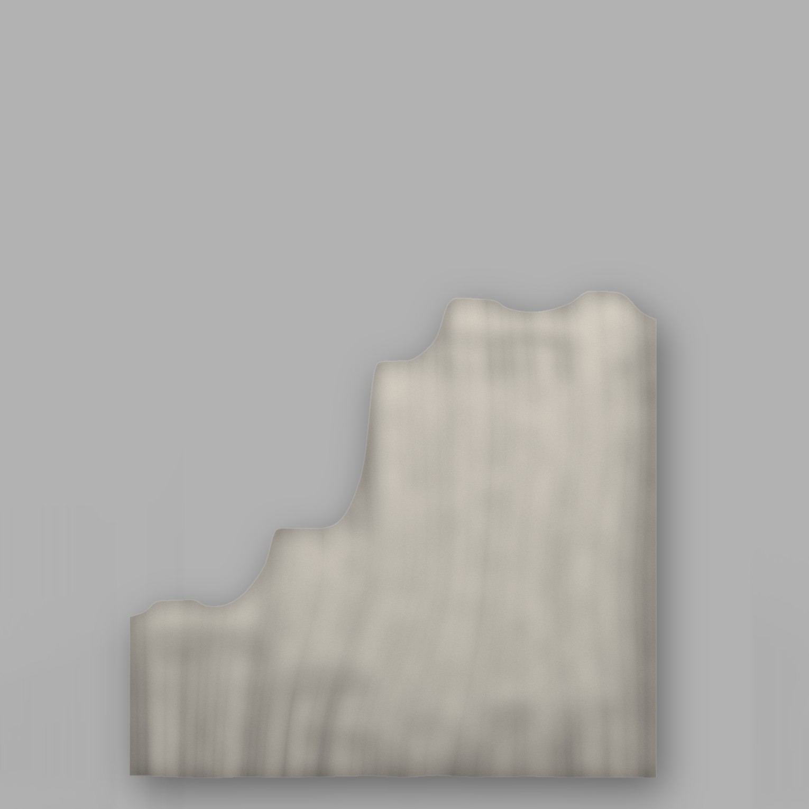
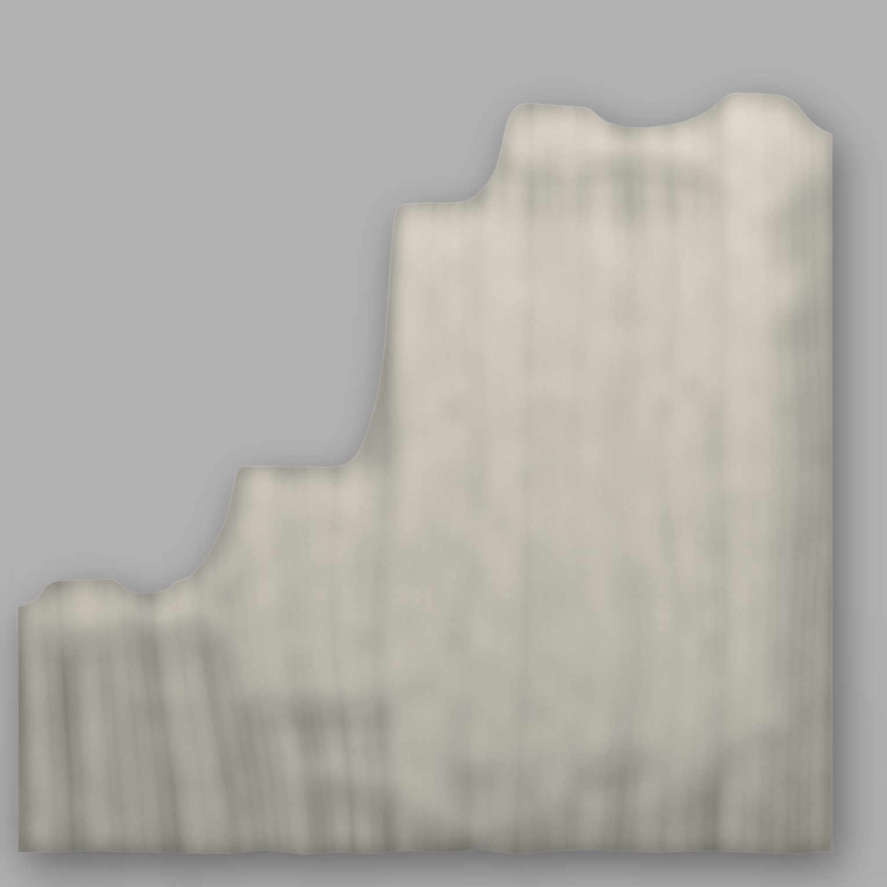
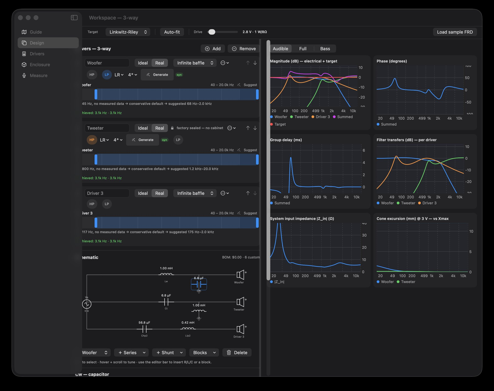

MW Acoustics
A Completely Fresh and Blended Take on Audio
MW Acoustics. A Completely Fresh and Blended Take on Audio
Developing both hardware and software with an ear to heritage quality and an eye to next-generation modern efficiency and use.
Our speakers incorporate new and patented materials from horn design to composites, with completely fresh behaviors in manufacturing to push the boundaries of what’s possible and blended with an unsurpassed quality of sound.
While our software solutions are powered by our own WRKS engine, we have software solutions that allow anyone – from layman to expert – to coordinate process, data, design and real-time information.

Products
The Neo Line
MW’s Neo line incorporates new and patented materials from horn design to composites, with completely fresh behaviors in manufacturing. Neo is designed to push the boundaries of what’s possible when the newest technologies are blended with heritage techniques – all toward an unsurpassed quality of sound.



Software · SDS : Speaker Design Suite